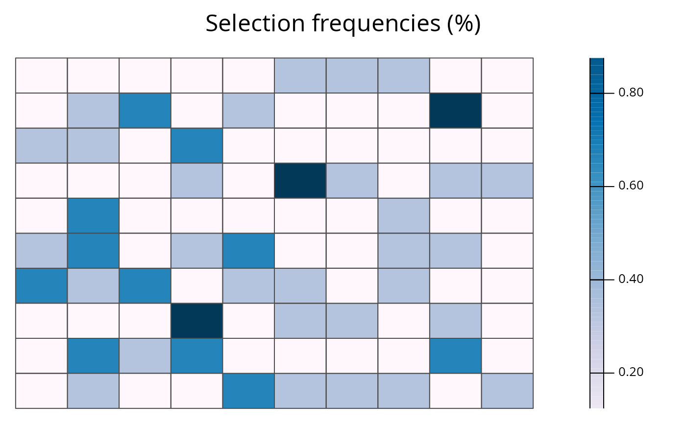
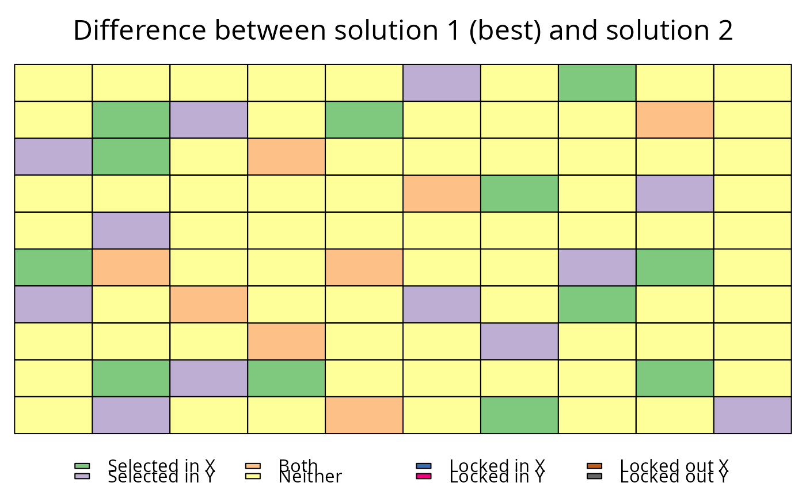

This function plots the solutions contained in RapSolved
objects. It can be used to show a single solution, or the the selection
frequencies of planning units contained in a single RapSolved
object. Additionally, two RapSolved objects can be supplied to
plot the differences between them.
# S4 method for RapSolved,numeric plot(x, y, basemap = "none", pu.color.palette = c("#e5f5f9", "#00441b", "#FFFF00", "#FF0000"), alpha = ifelse(basemap == "none", 1, 0.7), grayscale = FALSE, main = NULL, force.reset = FALSE) # S4 method for RapSolved,missing plot(x, y, basemap = "none", pu.color.palette = c("PuBu", "#FFFF00", "#FF0000"), alpha = ifelse(basemap == "none", 1, 0.7), grayscale = FALSE, main = NULL, force.reset = FALSE) # S4 method for RapSolved,RapSolved plot(x, y, i = NULL, j = i, basemap = "none", pu.color.palette = ifelse(is.null(i), c("RdYlBu", "#FFFF00", "#FF0000"), "Accent"), alpha = ifelse(basemap == "none", 1, 0.7), grayscale = FALSE, main = NULL, force.reset = FALSE)
Arguments
| x |
|
|---|---|
| y | Available inputs are: |
| i | Available inputs are: |
| j | Available inputs are: |
| basemap |
|
| pu.color.palette |
|
| alpha |
|
| grayscale |
|
| main |
|
| force.reset |
|
See also
Examples
# plot best solution plot(sim_rs, 0)# plot second solution plot(sim_rs, 2)# plot different between best and second solutions plot(sim_rs, sim_rs, 0 ,2)